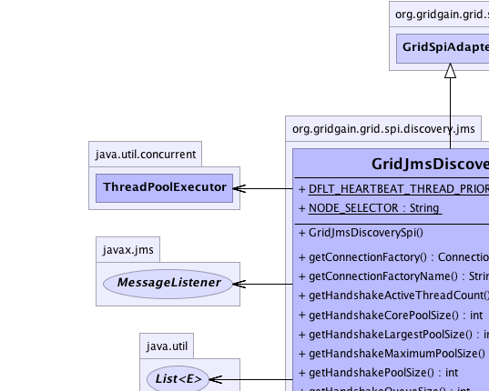
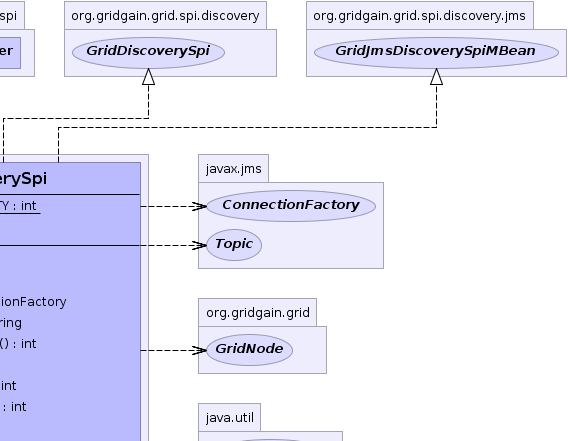
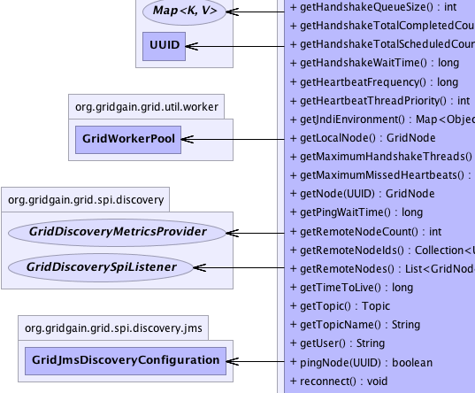
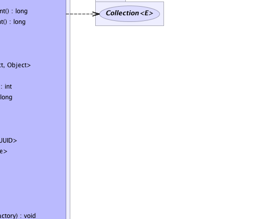
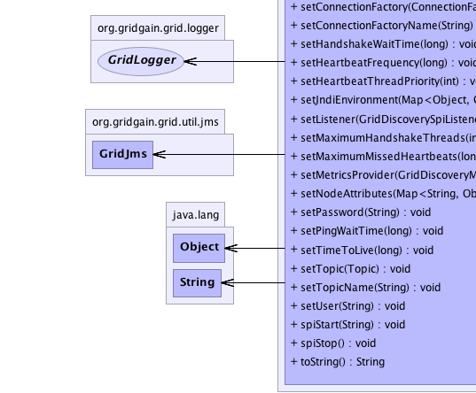
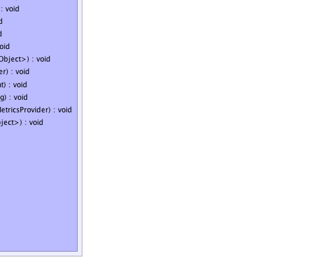

org.gridgain.grid.spi.GridSpiAdapter
org.gridgain.grid.spi.discovery.jms.GridJmsDiscoverySpi
org.gridgain.grid.spi.GridSpiAdapter
org.gridgain.grid.spi.discovery.jms.GridJmsDiscoverySpi
|
GridGain™ 3.1.0c
Community Edition |
|||||||||
| PREV CLASS NEXT CLASS | FRAMES NO FRAMES | |||||||||
| SUMMARY: NESTED | FIELD | CONSTR | METHOD | DETAIL: FIELD | CONSTR | METHOD | |||||||||
java.lang.Object
@GridSpiInfo(author="GridGain Systems, Inc.",
url="www.gridgain.com",
email="support@gridgain.com",
version="3.1.0c.30052011")
@GridSpiMultipleInstancesSupport(value=true)
public class GridJmsDiscoverySpi
JMS implementation of GridDiscoverySpi. This is a topic-based
implementation. Each node periodically sends JOIN_GRID heartbeat
message to notify the others that it's still alive. When node leaves cluster
it sends LEAVE_GRID message.
GridJmsDiscoverySpi.setJndiEnvironment(Map))GridJmsDiscoverySpi.setConnectionFactoryName(String))GridJmsDiscoverySpi.setConnectionFactory(ConnectionFactory))GridJmsDiscoverySpi.setUser(String))GridJmsDiscoverySpi.setPassword(String))GridJmsDiscoverySpi.setHeartbeatFrequency(long))GridJmsDiscoverySpi.setMaximumHandshakeThreads(int))GridJmsDiscoverySpi.setMaximumMissedHeartbeats(long))GridJmsDiscoverySpi.setTimeToLive(long))GridJmsDiscoverySpi.setHandshakeWaitTime(long))GridJmsDiscoverySpi.setPingWaitTime(long))GridJmsDiscoverySpi.setTopicName(String))GridJmsDiscoverySpi.setTopic(Topic))
GridJmsDiscoverySpi spi = new GridJmsDiscoverySpi();
// JNDI connection factory name.
spi.setConnectionFactoryName("java:ConnectionFactory");
// JNDI environment mandatory parameter.
Map<Object, Object> env = new Hashtable<Object, Object>(3);
env.put(Context.INITIAL_CONTEXT_FACTORY, "org.jnp.interfaces.NamingContextFactory");
env.put(Context.PROVIDER_URL, "jnp://localhost: * *");
env.put(Context.URL_PKG_PREFIXES, "org.jboss.naming:org.jnp.interfaces");
spi.setJndiEnvironment(env);
// JNDI topic name.
spi.setTopicName("topic/myjmstopic");
GridConfigurationAdapter cfg = new GridConfigurationAdapter();
// Override default discovery SPI.
cfg.setDiscoverySpi(spi);
// Starts grid.
G.start(cfg);
<bean id="grid.custom.cfg" class="org.gridgain.grid.GridConfigurationAdapter" singleton="true">
...
<property name="discoverySpi">
<bean class="org.gridgain.grid.spi.discovery.jms.GridJmsDiscoverySpi">
<property name="connectionFactoryName" value="java:ConnectionFactory"/>
<property name="topicName" value="topic/myjmstopic"/>
<property name="jndiEnvironment">
<map>
<entry>
<key><util:constant static-field="javax.naming.Context.INITIAL_CONTEXT_FACTORY"/></key>
<value>org.jnp.interfaces.NamingContextFactory</value>
</entry>
<entry>
<key><util:constant static-field="javax.naming.Context.PROVIDER_URL"/></key>
<value>jnp://localhost:1099</value>
</entry>
<entry>
<key><util:constant static-field="javax.naming.Context.URL_PKG_PREFIXES"/></key>
<value>org.jboss.naming:org.jnp.interfaces</value>
</entry>
</map>
</property>
</bean>
</property>
...
</bean>
Note: JMS provider is not shipped with GridGain. If you don't have JMS, you need to
download it separately. To download JMS provider see http://en.wikipedia.org/wiki/Java_Message_Service#JMS_Provider_Implementations
for more details. Once installed, JMS provider should be available on the classpath for
GridGain. If you use ${GRIDGAIN_HOME}/bin/ggstart.{sh|bat} script to start
a grid node you can simply add JMS JARs to ${GRIDGAIN_HOME}/bin/setenv.{sh|bat}
scripts that's used to set up class path for the main scripts.
This release of GridGain has been tested with:
Note: When using JMS-based SPIs (communication or discovery) you cannot start
multiple GridGain instances in the same VM due to possible limitations of JMS providers. GridGain runtime
will detect this situation and prevent GridGain from starting in such case.
See GridSpiMultipleInstancesSupport for details.

For information about Spring framework visit www.springframework.org
| Wiki | |
| Forum |
GridDiscoverySpi
|  |  |
|  |  |
|  |  |
| Field Summary | |
|---|---|
static int |
DFLT_HEARTBEAT_THREAD_PRIORITY
Default heartbeat thread priority. |
static String |
NODE_SELECTOR
Node selector to filter out messages for the others (value is node). |
| Constructor Summary | |
|---|---|
GridJmsDiscoverySpi()
|
|
| Method Summary | |
|---|---|
javax.jms.ConnectionFactory |
getConnectionFactory()
Returns JMS connection factory. |
String |
getConnectionFactoryName()
Returns name of the JMS connection factory in JNDI tree that is used for establishing connections by discovery SPI. |
int |
getHandshakeActiveThreadCount()
Returns the approximate number of threads that are actively processing handshake tasks. |
int |
getHandshakeCorePoolSize()
Returns the core number of handshake threads. |
int |
getHandshakeLargestPoolSize()
Returns the largest number of handshake threads that have ever simultaneously been in the pool. |
int |
getHandshakeMaximumPoolSize()
Returns the maximum allowed number of handshake threads. |
int |
getHandshakePoolSize()
Returns the current number of handshake threads in the pool. |
int |
getHandshakeQueueSize()
Gets current size of the handshake queue size. |
long |
getHandshakeTotalCompletedCount()
Returns the approximate total number of handshakes that have completed execution. |
long |
getHandshakeTotalScheduledCount()
Returns the approximate total number of handshake tasks that have been scheduled for execution. |
long |
getHandshakeWaitTime()
Returns timeout value for attributes handshake. |
long |
getHeartbeatFrequency()
Returns interval for heartbeat messages. |
int |
getHeartbeatThreadPriority()
Gets heartbeat thread priority. |
Map<Object,Object> |
getJndiEnvironment()
Returns naming context variables which are used by node to establish JNDI tree connection. |
GridNode |
getLocalNode()
Gets local node. |
int |
getMaximumHandshakeThreads()
Returns maximum number of handshake threads. |
long |
getMaximumMissedHeartbeats()
Returns numbers of heartbeat messages that could be missed before node is considered to be failed. |
GridNode |
getNode(UUID nodeId)
Gets node by ID. |
long |
getPingWaitTime()
Returns timeout value for ping request. |
int |
getRemoteNodeCount()
Returns number of remote nodes. |
Collection<UUID> |
getRemoteNodeIds()
Returns set of discovered remote nodes IDs. |
List<GridNode> |
getRemoteNodes()
Gets collection of remote nodes in grid or empty collection if no remote nodes found. |
long |
getTimeToLive()
Returns JMS time to live value for messages. |
javax.jms.Topic |
getTopic()
Returns JMS topic for broadcasting messages to all discovered nodes. |
String |
getTopicName()
Returns JMS topic name for broadcasting messages to all discovered nodes. |
String |
getUser()
Returns username to connect to JNDI. |
boolean |
pingNode(UUID nodeId)
Pings the remote node to see if it's alive. |
void |
setConnectionFactory(javax.jms.ConnectionFactory factory)
Sets JMS connection factory. |
void |
setConnectionFactoryName(String factoryName)
Sets name of the connection factory in the JNDI tree of application server which node will use to create new JMS connection. |
void |
setHandshakeWaitTime(long handshakeWaitTime)
Sets handshake timeout. |
void |
setHeartbeatFrequency(long beatFreq)
Sets interval for sending heartbeat requests. |
void |
setHeartbeatThreadPriority(int beatThreadPri)
Sets heartbeat thread priority. |
void |
setJndiEnvironment(Map<Object,Object> jndiEnv)
Sets JNDI environment. |
void |
setListener(GridDiscoverySpiListener lsnr)
Sets a listener for discovery events. |
void |
setMaximumHandshakeThreads(int maxHandshakeThreads)
Sets maximum number of handshake threads. |
void |
setMaximumMissedHeartbeats(long maxMissedHeartbeats)
Sets number of heartbeat requests that could be missed until remote node becomes unavailable. |
void |
setMetricsProvider(GridDiscoveryMetricsProvider metricsProvider)
Sets discovery metrics provider. |
void |
setNodeAttributes(Map<String,Object> attrs)
Sets node attributes which will be distributed in grid during join process. |
void |
setPassword(String pswd)
Sets password to establish connection with JMS server. |
void |
setPingWaitTime(long pingWaitTime)
Sets ping request timeout. |
void |
setTimeToLive(long ttl)
Sets message's lifetime (in milliseconds). |
void |
setTopic(javax.jms.Topic topic)
Sets JMS topic. |
void |
setTopicName(String topicName)
Sets name of the topic. |
void |
setUser(String user)
Sets user name which is used for connection establishing. |
void |
spiStart(String gridName)
This method is called to start SPI. |
void |
spiStop()
This method is called to stop SPI. |
String |
toString()
|
| Methods inherited from class org.gridgain.grid.spi.GridSpiAdapter |
|---|
assertParameter, configInfo, createSpiAttributeName, getAuthor, getConsistentAttributeNames, getGridGainHome, getLocalNodeId, getName, getNodeAttributes, getSpiContext, getStartTimestamp, getStartTimestampFormatted, getUpTime, getUpTimeFormatted, getVendorEmail, getVendorUrl, getVersion, injectables, onContextDestroyed, onContextInitialized, registerMBean, setJson, setName, startInfo, startStopwatch, stopInfo, unregisterMBean |
| Methods inherited from class java.lang.Object |
|---|
clone, equals, finalize, getClass, hashCode, notify, notifyAll, wait, wait, wait |
| Methods inherited from interface org.gridgain.grid.spi.GridSpi |
|---|
getName, getNodeAttributes, onContextDestroyed, onContextInitialized |
| Methods inherited from interface org.gridgain.grid.spi.GridSpiJsonConfigurable |
|---|
setJson |
| Methods inherited from interface org.gridgain.grid.spi.GridSpiManagementMBean |
|---|
getAuthor, getGridGainHome, getLocalNodeId, getName, getStartTimestamp, getStartTimestampFormatted, getUpTime, getUpTimeFormatted, getVendorEmail, getVendorUrl, getVersion |
| Field Detail |
|---|
public static final int DFLT_HEARTBEAT_THREAD_PRIORITY
public static final String NODE_SELECTOR
node).
| Constructor Detail |
|---|
public GridJmsDiscoverySpi()
| Method Detail |
|---|
public String getUser()
getUser in interface GridJmsDiscoverySpiMBeannull is returned.@GridSpiConfiguration(optional=true) public void setUser(String user)
null value means that no authentication will be used.
This configuration parameter is optional.
If not provided, default value is null.
user - Name of the user.@GridSpiConfiguration(optional=true) public void setPassword(String pswd)
If not provided, default value is null.
pswd - Password.public long getHeartbeatFrequency()
getHeartbeatFrequency in interface GridJmsDiscoverySpiMBean@GridSpiConfiguration(optional=true) public void setHeartbeatFrequency(long beatFreq)
If not provided, default value is GridJmsDiscoveryConfiguration.DFLT_HEARTBEAT_FREQ.
beatFreq - time in milliseconds.public int getHeartbeatThreadPriority()
getHeartbeatThreadPriority in interface GridJmsDiscoverySpiMBean@GridSpiConfiguration(optional=true) public void setHeartbeatThreadPriority(int beatThreadPri)
beatThreadPri - Heartbeat thread priority.public long getMaximumMissedHeartbeats()
getMaximumMissedHeartbeats in interface GridJmsDiscoverySpiMBean@GridSpiConfiguration(optional=true) public void setMaximumMissedHeartbeats(long maxMissedHeartbeats)
If not provided, default value is GridJmsDiscoveryConfiguration.DFLT_MAX_MISSED_HEARTBEATS.
maxMissedHeartbeats - number of requests.public long getTimeToLive()
getTimeToLive in interface GridJmsDiscoverySpiMBean@GridSpiConfiguration(optional=true) public void setTimeToLive(long ttl)
If not provided, default value is GridJmsDiscoveryConfiguration.DFLT_TIME_TO_LIVE.
ttl - New time-to-live value.public long getPingWaitTime()
getPingWaitTime in interface GridJmsDiscoverySpiMBean@GridSpiConfiguration(optional=true) public void setHandshakeWaitTime(long handshakeWaitTime)
If not provided, default value is GridJmsDiscoveryConfiguration.DFLT_HANDSHAKE_WAIT_TIME.
handshakeWaitTime - time in milliseconds.public long getHandshakeWaitTime()
getHandshakeWaitTime in interface GridJmsDiscoverySpiMBean@GridSpiConfiguration(optional=true) public void setMaximumHandshakeThreads(int maxHandshakeThreads)
Note that if you expect a lot of nodes discovered each other in parallel you should better set higher value. After discovery number of unused threads will be shrank to 1. Typically two nodes that discover each other require one thread.
If not provided, default value is GridJmsDiscoveryConfiguration.DFLT_MAX_HANDSHAKE_THREADS.
maxHandshakeThreads - maximum number of handshake threads.public int getMaximumHandshakeThreads()
Note that if you expect a lot of nodes discovered each other in parallel you should better set higher value. After discovery number of unused threads will be shrank to 1. Typically two nodes that discover each other require one thread.
getMaximumHandshakeThreads in interface GridJmsDiscoverySpiMBeanpublic int getHandshakeActiveThreadCount()
getHandshakeActiveThreadCount in interface GridJmsDiscoverySpiMBeanpublic long getHandshakeTotalCompletedCount()
getHandshakeTotalCompletedCount in interface GridJmsDiscoverySpiMBeanpublic int getHandshakeQueueSize()
getHandshakeQueueSize in interface GridJmsDiscoverySpiMBeanpublic int getHandshakeCorePoolSize()
getHandshakeCorePoolSize in interface GridJmsDiscoverySpiMBeanpublic int getHandshakeLargestPoolSize()
getHandshakeLargestPoolSize in interface GridJmsDiscoverySpiMBeanpublic int getHandshakeMaximumPoolSize()
getHandshakeMaximumPoolSize in interface GridJmsDiscoverySpiMBeanpublic int getHandshakePoolSize()
getHandshakePoolSize in interface GridJmsDiscoverySpiMBeanpublic long getHandshakeTotalScheduledCount()
getHandshakeTotalScheduledCount in interface GridJmsDiscoverySpiMBean@GridSpiConfiguration(optional=true) public void setPingWaitTime(long pingWaitTime)
If not provided, default value is GridJmsDiscoveryConfiguration.DFLT_PING_WAIT_TIME.
pingWaitTime - time in milliseconds.public Map<Object,Object> getJndiEnvironment()
getJndiEnvironment in interface GridJmsDiscoverySpiMBeanContext@GridSpiConfiguration(optional=true) public void setJndiEnvironment(Map<Object,Object> jndiEnv)
jndiEnv - map of naming context variables.public String getConnectionFactoryName()
getConnectionFactoryName in interface GridJmsDiscoverySpiMBeannull is returned.@GridSpiConfiguration(optional=true) public void setConnectionFactoryName(String factoryName)
factoryName - Connection factory name.public javax.jms.ConnectionFactory getConnectionFactory()
getConnectionFactory in interface GridJmsDiscoverySpiMBean@GridSpiConfiguration(optional=true) public void setConnectionFactory(javax.jms.ConnectionFactory factory)
There is no default value.
factory - JMS connection factory.public String getTopicName()
getTopicName in interface GridJmsDiscoverySpiMBean@GridSpiConfiguration(optional=true) public void setTopicName(String topicName)
If not provided, default value is GridJmsDiscoveryConfiguration.DFLT_TOPIC_NAME.
topicName - Name of the topic.public javax.jms.Topic getTopic()
getTopic in interface GridJmsDiscoverySpiMBean@GridSpiConfiguration(optional=true) public void setTopic(javax.jms.Topic topic)
There is no default value.
topic - JMS topic name.public void setNodeAttributes(Map<String,Object> attrs)
setNodeAttributes in interface GridDiscoverySpiattrs - Map of node attributes.public void setListener(GridDiscoverySpiListener lsnr)
GridDiscoveryEvent for a set of all possible
discovery events.
Note that as of GridGain 3.0.2 this method is called before
method GridSpi.spiStart(String) is called. This is done to
avoid potential window when SPI is started but the listener is
not registered yet.
setListener in interface GridDiscoverySpilsnr - Listener to discovery events or null to unset the listener.public void setMetricsProvider(GridDiscoveryMetricsProvider metricsProvider)
GridDiscoveryMetricsProvider.getMetrics() method to exchange
dynamic metrics between nodes.
setMetricsProvider in interface GridDiscoverySpimetricsProvider - Provider of metrics data.public GridNode getLocalNode()
getLocalNode in interface GridDiscoverySpi
public void spiStart(String gridName)
throws GridSpiException
spiStart in interface GridSpiGridSpiException - Throws in case of any error during SPI start.gridName - Name of grid instance this SPI is being started for
(null for default grid).
public void spiStop()
throws GridSpiException
GridSpiNote that this method can be called at any point including during recovery of failed start. It should make no assumptions on what state SPI will be in when this method is called.
spiStop in interface GridSpiGridSpiException - Thrown if management bean could not be unregistered.public List<GridNode> getRemoteNodes()
getRemoteNodes in interface GridDiscoverySpipublic GridNode getNode(UUID nodeId)
getNode in interface GridDiscoverySpinodeId - Node ID.
null if node is not found.public Collection<UUID> getRemoteNodeIds()
getRemoteNodeIds in interface GridJmsDiscoverySpiMBeanpublic int getRemoteNodeCount()
getRemoteNodeCount in interface GridJmsDiscoverySpiMBeanpublic boolean pingNode(UUID nodeId)
pingNode in interface GridDiscoverySpinodeId - Node Id.
true if node alive, false otherwise.public String toString()
toString in class Object
|
GridGain™ 3.1.0c
Community Edition |
|||||||||
| PREV CLASS NEXT CLASS | FRAMES NO FRAMES | |||||||||
| SUMMARY: NESTED | FIELD | CONSTR | METHOD | DETAIL: FIELD | CONSTR | METHOD | |||||||||
|
GridGain = High Performance Cloud Computing
|
|

|
|